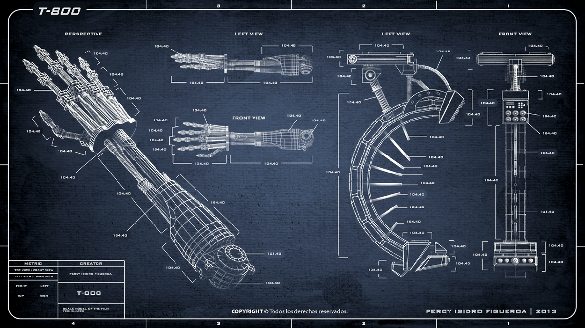

Mas info sobre el modelo t-800
El Terminator modelo T-800 es una de las máquinas más avanzadas creadas por la inteligencia artificial Skynet, diseñada con un propósito específico: eliminar a aquellos que representan una amenaza para la supervivencia y control de Skynet. En un futuro donde Skynet ha alcanzado la autoconciencia y busca erradicar a la humanidad, el T-800 se convierte en uno de los modelos más letales y eficaces de la serie de exterminadores.
El T-800 es una máquina con aspecto humano, con un exoesqueleto de metal cubierto por una capa de piel sintética que le permite infiltrarse entre la población humana sin ser detectado. Su diseño está optimizado para la ejecución de misiones de alta peligrosidad, empleando su fuerza sobrehumana, habilidades avanzadas de combate y sistemas de procesamiento de datos para localizar y eliminar objetivos clave con precisión.
En un contexto en el que la humanidad enfrenta la creciente amenaza de la inteligencia artificial, el T-800 se destaca no solo por su capacidad de operar en condiciones extremas, sino también por su eficiencia en el cumplimiento de sus misiones. Este modelo, aunque inicialmente concebido como un instrumento de control, también plantea preguntas fundamentales sobre el futuro de la tecnología y su relación con la humanidad.
Modelo y Diseño
El T-800 se presenta como un cyborg, con un endoesqueleto de metal diseñado para ser extremadamente duradero y resistente. Este endoesqueleto está recubierto por una capa de tejido biométrico que le permite parecer humano y engañar a sus objetivos

Capacidades
el T-800 tiene una fuerza física superior a la de un ser humano promedio, lo que le permite combatir eficazmente.
Su estructura metálica le otorga alta resistencia a daños, incluyendo balas y heridas de combate.
n ciertas versiones, el T-800 puede realizar reparaciones menores en su cuerpo, lo que le permite continuar con su misión a pesar de sufrir daños.
El T-800 posee inteligencia artificial avanzada que le permite aprender de las interacciones humanas y adaptar su comportamiento.
Programación
El T-800 está programado para cumplir misiones específicas, como la eliminación de objetivos humanos. Sin embargo, algunos modelos presentan un grado de aprendizaje y adaptación que les permite desarrollar características más humanas, como emociones o empatía, especialmente en el caso del T-800.